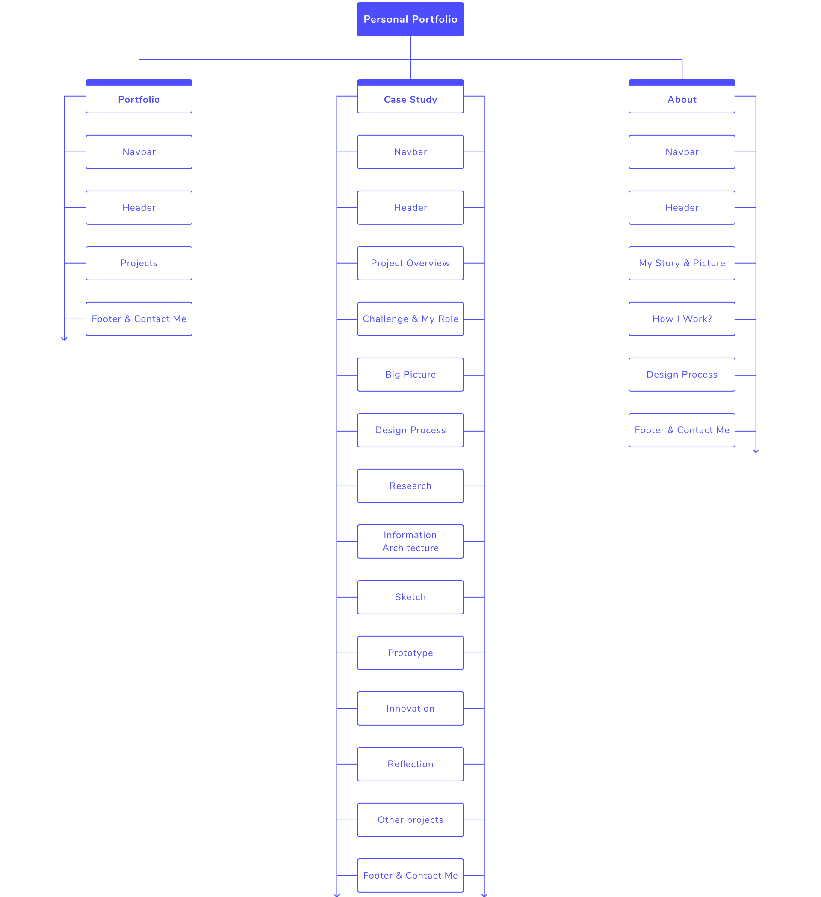

A personal UX designer portfolio website is a way for you to be yourself and tell your story. Personal Portfolio is my first portfolio that I designed after I changed my career to UX design. One of the things I realized after changing my career as a user experience designer was the need to create a personal portfolio. The objective for this project was to develop a personal portfolio to share my user experience design projects and the process that I followed to design it.
The requirements that I followed for this project were as follows:
Entire design steps from definition to development, research, information architecture and testing. I was the only designer on this project. I was involved in everything from defining the brand and goals, research and discovery requirements, creating wireframes and prototype, all the way to creating final UI designs as well as designing the logo. I also was the web developer of this project.
The below diagram shows steps of my user experience design process. You can read more about my UX design process in about page.
Research helps me identify and evaluate my initial assumptions, find and recognize the target audience, their needs, goals, and mental models. Overall, research informs my work, improves our understanding, and makes me work better. The first insight that I found was to identify the target audience of this project. It’s that thing you must know as a UX designer. You must follow a User-Centered approach. “To understand another person, you must swim in the same waters that drowned them.”
In this project, I understand my users are hiring managers, recruiters, or fellow UX professionals. Then I follow the best available samples to discover the most important sections of a UX portfolio. I understand one of the most important sections of every UX portfolio is Case Studies. “How you climb a mountain is more important than reaching the top.” Next I follow the best UX case studies and collect the important sections and points from every case study. This insights are listed below:
Also I found list of questions that I can ask from myself in this process:
Based on the information and insights gained from the research step, such as target users of this project, most usage sections of the best UX portfolio and best samples and points about case studies, I defined the sitemap for this project.
I use low-fidelity sketches and wireframes to organize the information architecture into something more visual. With low-fidelity wireframes, the planned syllabus and the general structure of the application could easily be tested in usability tests. Without much effort, adjustments could be made before going into the much more costly digital implementation.
After designing low-fidelity wireframes, I create high-fidelity prototypes, which I supplemented with clickability using Figma and Adobe XD. The visual design was developed by iterating processes and using the first version of the style guide.
Through this project I learned the importance and power of User-Centered approaches and design thinking in improving the quality of any visual design, where all of the designs start with asking why and define goals and purposes of the project. I also learned important experiences and insights that will help me in the future. Some of this insights listed below: